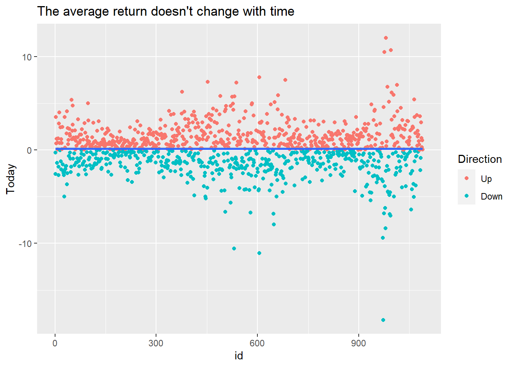
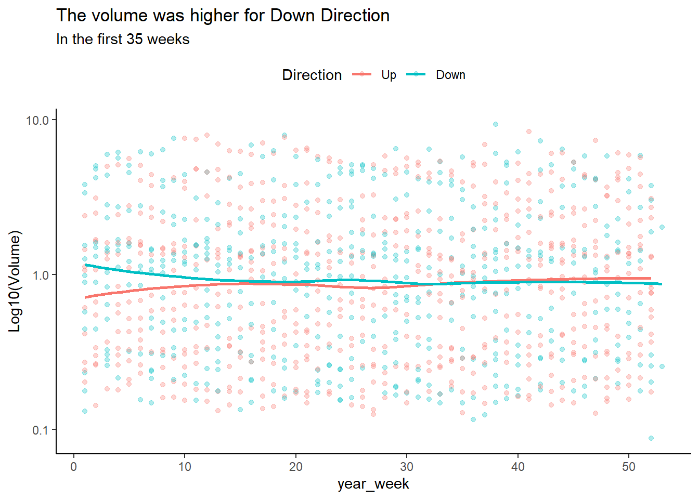
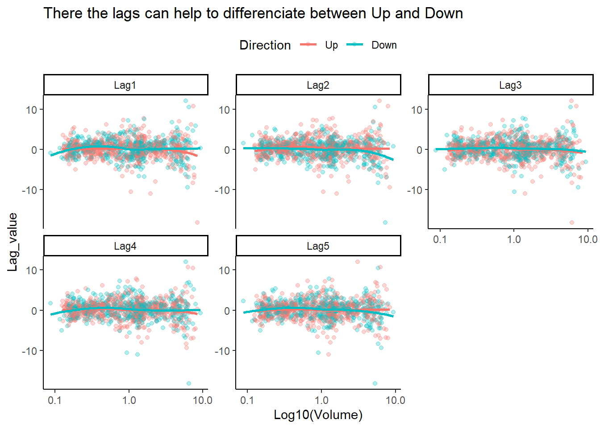
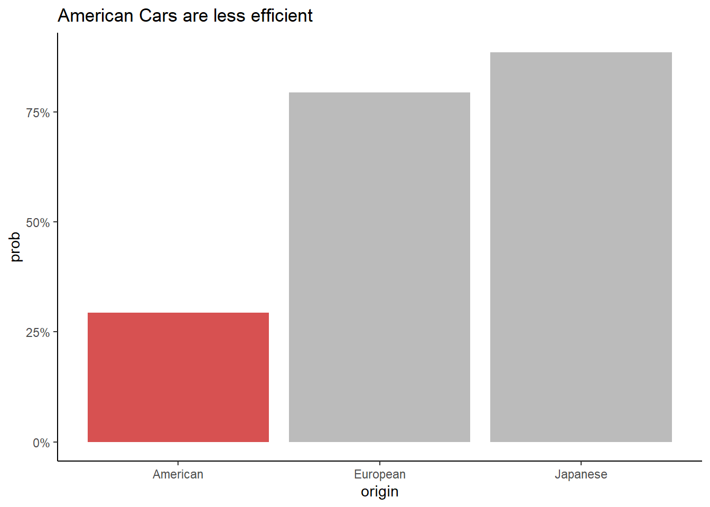
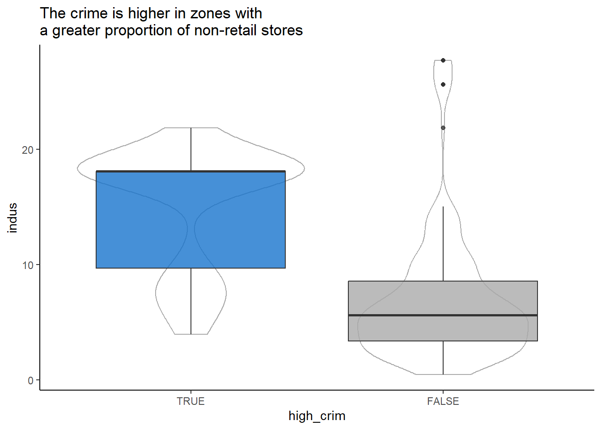
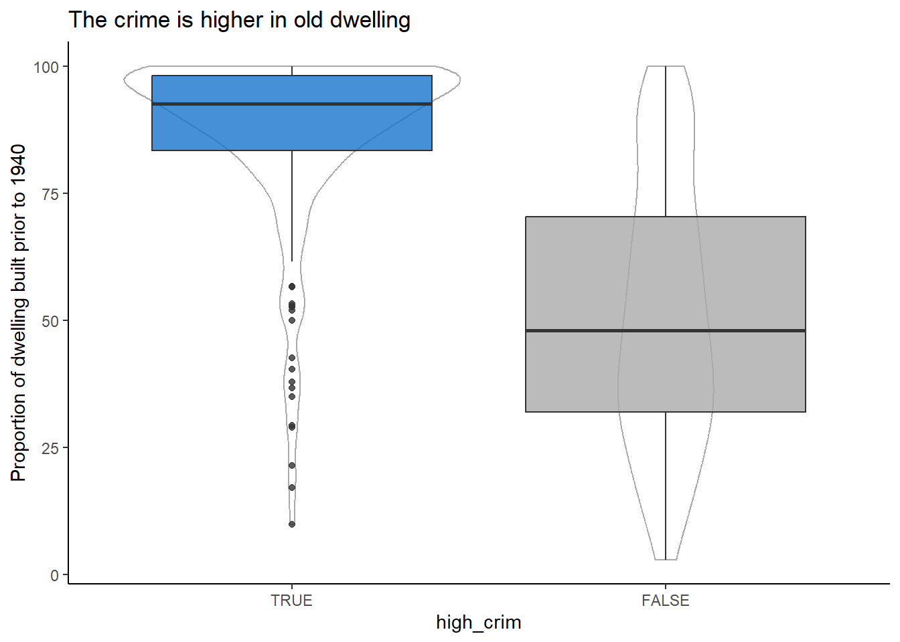
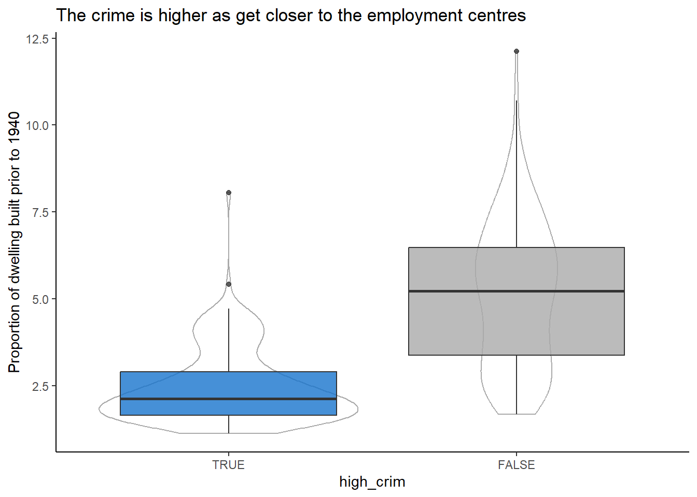
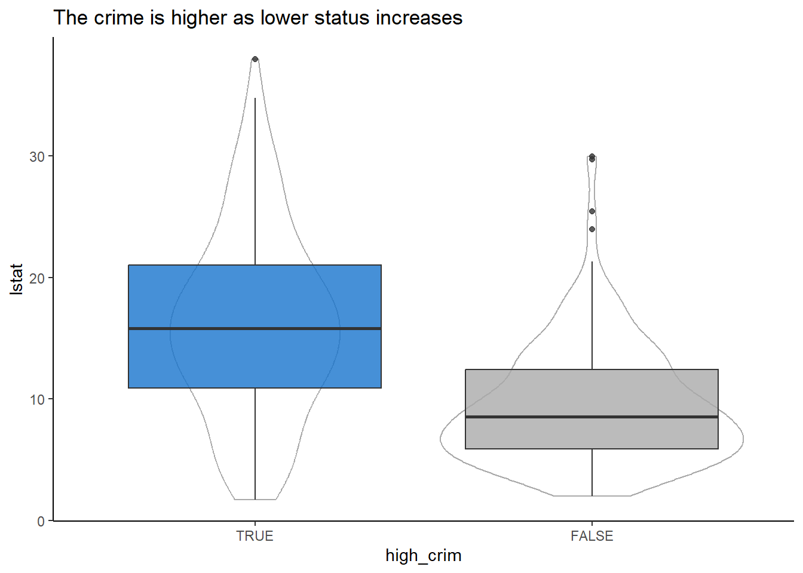
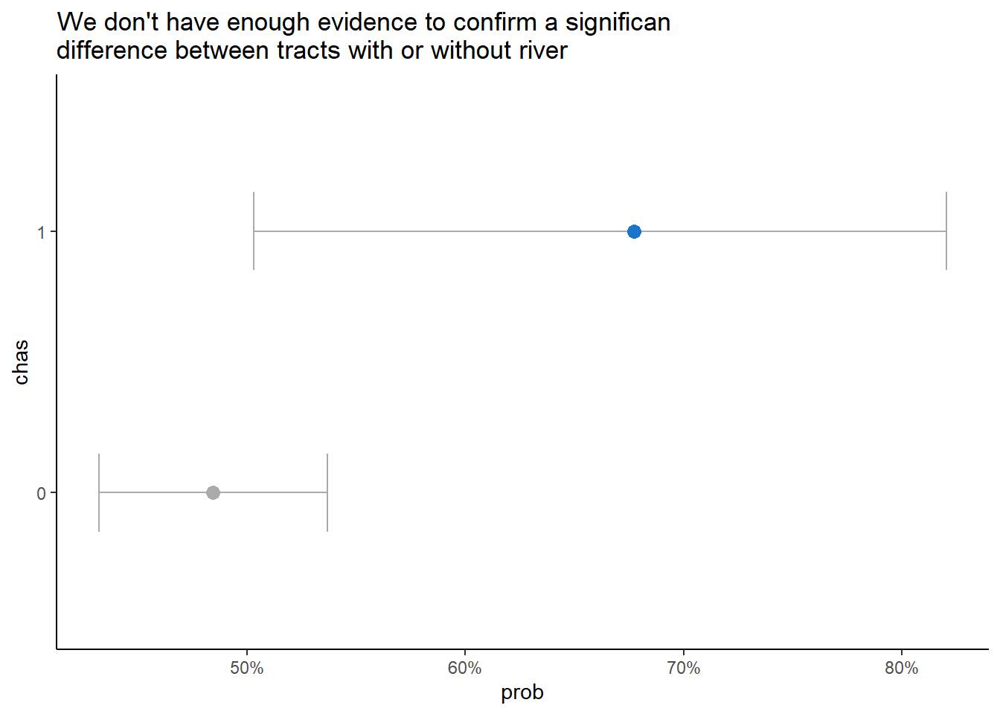
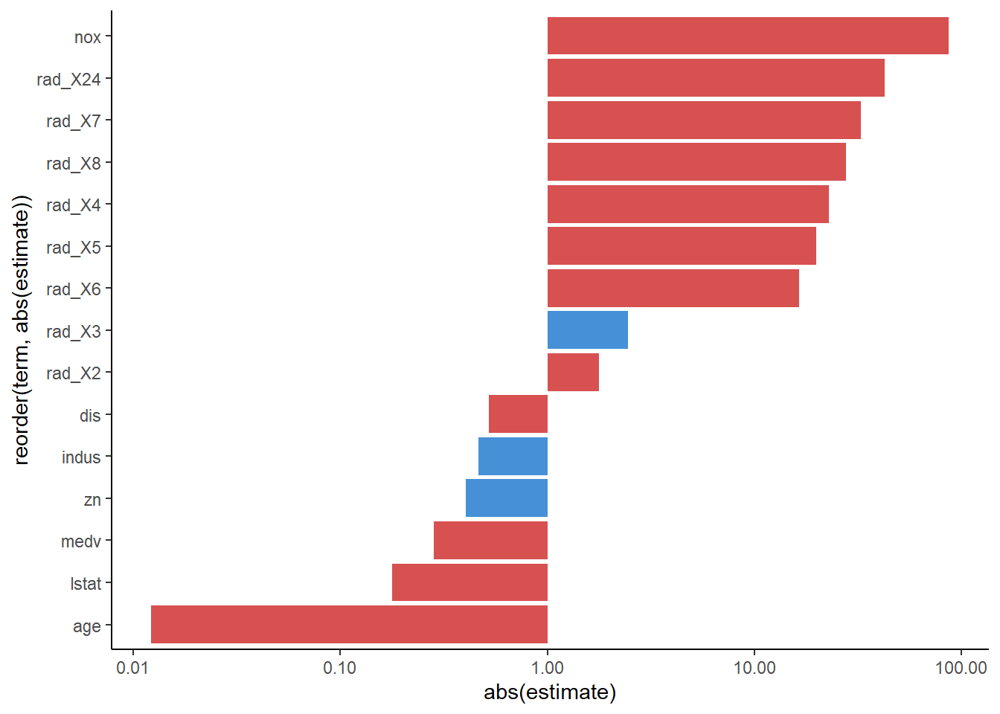

04 - Classification
Libraries
Custom functions
In this section I place the functions that were used in many code chunks across the chapter.
rbind_list_name <- function(list.DT, new_col_name, ...){
stopifnot(is.list(list.DT))
stopifnot(all(sapply(list.DT, is.data.table)))
lapply(seq_along(list.DT),
function(tb_i){
list.DT[[tb_i]][, (new_col_name) := names(list.DT)[tb_i]] }) |>
rbindlist(...)
}
get_class_metrics <- metric_set(sens, spec)
get_class_matrix_metrics <- function(model,
split,
fit_formula,
metric_function = metric_set(sens, spec),
...){
testing_predictions <-
model |>
last_fit(as.formula(fit_formula), split = split) |>
collect_predictions()
truth_var <- sub(pattern = " *~.+$", replacement = "", x = fit_formula)
list(conf_mat = conf_mat(testing_predictions,
truth = !!truth_var,
estimate = .pred_class),
metrics = metric_function(testing_predictions,
truth = !!truth_var,
estimate = .pred_class,
...) )
}
model_knn_k <- function(k){
model <-
nearest_neighbor(neighbors = k) |>
set_mode("classification") |>
set_engine("kknn")
return(model)
}
ModelNaiveBayes <-
naive_Bayes() |>
set_mode("classification") |>
set_engine("klaR") |>
set_args(usekernel = FALSE)
evaluate_model <- function(model, recipe_list, split){
lapply(recipe_list, function(recipe, split){
workflow() |>
add_recipe(recipe) |>
add_model(model) |>
last_fit(split = split) |>
collect_metrics() |>
as.data.table() },
split = split) |>
rbind_list_name(new_col_name = "recipe")
}Conceptual
1
1. Using a little bit of algebra, prove that (4.2) is equivalent to (4.3). In other words, the logistic function representation and logit representation for the logistic regression model are equivalent.
\[ \begin{split} p(X) &= \frac{e^{\beta_{0}+\beta_{1}X}} {1+e^{\beta_{0}+\beta_{1}X}} \\ p(X) (1+e^{\beta_{0}+\beta_{1}X}) & = e^{\beta_{0}+\beta_{1}X} \\ p(X)+p(X) e^{\beta_{0}+\beta_{1}X} & = e^{\beta_{0}+\beta_{1}X} \\ p(X) & = e^{\beta_{0}+\beta_{1}X} - p(X) e^{\beta_{0}+\beta_{1}X} \\ p(X) & = (1 - p(X))e^{\beta_{0}+\beta_{1}X} \\ \frac{p(X)}{1 - p(X)} & = e^{\beta_{0}+\beta_{1}X} \end{split} \]
2
2. It was stated in the text that classifying an observation to the class for which (4.17) is largest is equivalent to classifying an observation to the class for which (4.18) is largest. Prove that this is the case. In other words, under the assumption that the observations in the kth class are drawn from a \(N(\mu_k,\sigma^2)\) distribution, the Bayes classifier assigns an observation to the class for which the discriminant function is maximized.
To prove that both functions would provide the same class we need to check that both functions change from one \(Y\) class to other in the same \(x\) value.
If \(K = 2\) and \(\pi_1 = \pi_2 = \pi_c\) we can show that:
\[ \begin{split} p_{1}(x) & = p_{2}(x) \\ \frac{\pi_c \frac{1}{\sqrt{2\pi} \sigma} e^{-\frac{1}{2\sigma^2} (x - \mu_{1})^2}} {\sum_{l=1}^{K} \pi_l \frac{1}{\sqrt{2\pi} \sigma} e^{-\frac{1}{2\sigma^2} (x - \mu_{l})^2}} & = \frac{\pi_c \frac{1}{\sqrt{2\pi} \sigma} e^{-\frac{1}{2\sigma^2} (x - \mu_{2})^2}} {\sum_{l=1}^{K} \pi_l \frac{1}{\sqrt{2\pi} \sigma} e^{-\frac{1}{2\sigma^2} (x - \mu_{l})^2}} \\ e^{-\frac{1}{2\sigma^2} (x - \mu_{1})^2} & = e^{-\frac{1}{2\sigma^2} (x - \mu_{2})^2} \\ \frac{e^{-\frac{1}{2\sigma^2} (x - \mu_{1})^2}}{e^{-\frac{1}{2\sigma^2} (x - \mu_{2})^2}} & = 1 \\ (x - \mu_{2})^2 - (x - \mu_{1})^2 & = 0 \\ x^2 - 2x\mu_{2} + \mu_{2}^2 - (x^2 - 2x\mu_{1} + \mu_{1}^2) & = 0 \\ 2x (\mu_{1}- \mu_{2}) & = \mu_{1}^2 - \mu_{2}^2 \\ x & = \frac{\mu_{1}^2 - \mu_{2}^2}{2 (\mu_{1}- \mu_{2})} \\ x & = \frac{\mu_1 + \mu_2}{2} \end{split} \]
- And also:
\[ \begin{split} \delta_{1}(x) & = \delta_{2}(x) \\ \log{(\pi_{c})} - \frac{\mu_{1}^2}{2\sigma^2} + x \cdot \frac{\mu_{1}}{\sigma^2} & = \log{(\pi_{c})} - \frac{\mu_{2}^2}{2\sigma^2} + x \cdot \frac{\mu_{2}}{\sigma^2} \\ x (\mu_{1} - \mu_{2}) & = \frac{\mu_{1}^2 - \mu_{2}^2}{2} \\ x & = \frac{\mu_{1}^2 - \mu_{2}^2}{2(\mu_{1} - \mu_{2})} \\ x & = \frac{\mu_1 + \mu_2}{2} \end{split} \]
- Let’s see an example visually by setting as example the next values for each \(Y\) class:
| \(k\) | \(\sigma\) | \(\pi\) | \(\mu\) |
|---|---|---|---|
| 1 | 0.5 | 0.5 | 2 |
| 2 | 0.5 | 0.5 | 4 |
ldm_k_prop <- function(x,
k,
sigma = c(0.5,0.5),
pi_k = c(0.5,0.5),
mu = c(2, 4),
logit = FALSE){
if(logit){
return(x * mu[k]/sigma[k]^2 - mu[k]^2/(2*sigma[k]^2) + log(pi_k[k]))
}
denominator <-
sapply(x, \(y) sum(pi_k * (1/(sqrt(2*pi)*sigma)) * exp(-1/(2*sigma^2) * (y - mu)^2) ) )
k_numerador <-
(pi_k[k]* (sqrt(2*pi)*sigma[k])^-1 * exp(- (2*sigma[k]^2)^-1 * (x - mu[k])^2))
return(k_numerador / denominator)
}
BasePlot <-
data.frame(x = 1:5) |>
ggplot(aes(x))+
scale_x_continuous(breaks = scales::breaks_width(1))+
theme_light()+
theme(panel.grid.major.y = element_blank(),
panel.grid.minor.y = element_blank(),
axis.title.y = element_blank(),
axis.text.y = element_blank(),
axis.ticks.y = element_blank())
p1 <-
BasePlot +
geom_function(fun = \(y) ldm_k_prop(x = y, k = 1), color = "blue")+
geom_function(fun = \(y) ldm_k_prop(x = y, k = 2), color = "red")
p2 <-
BasePlot +
geom_function(fun = \(y) ldm_k_prop(x = y, k = 1, logit = TRUE), color = "blue")+
geom_function(fun = \(y) ldm_k_prop(x = y, k = 2, logit = TRUE), color = "red")
(p1 / p2) +
plot_annotation(title = 'Comparing Proportion Function vs Logit Function of LDA',
theme = theme(plot.title = element_text(face = "bold")) )
3
3. This problem relates to the QDA model, in which the observations within each class are drawn from a normal distribution with a class specific mean vector and a class specific covariance matrix. We consider the simple case where \(p = 1\); i.e. there is only one feature. Suppose that we have K classes, and that if an observation belongs to the kth class then X comes from a one-dimensional normal distribution, \(X ∼ N(\mu_k, \sigma^2_k)\). Recall that the density function for the one-dimensional normal distribution is given in (4.16). Prove that in this case, the Bayes classifier is not linear. Argue that it is in fact quadratic.
\[ \begin{split} p_k(x) & = \frac{\pi_k \frac{1}{\sqrt{2\pi} \sigma_k} e^{-\frac{1}{2\sigma_k^2} (x - \mu_{1})^2}} {\sum_{l=1}^{K} \pi_l \frac{1}{\sqrt{2\pi} \sigma_l} e^{-\frac{1}{2\sigma_l^2} (x - \mu_{l})^2}} \\ & = \frac{\pi_k \frac{1}{\sqrt{2\pi} \sigma_k} e^{-\frac{1}{2\sigma_k^2} (x - \mu_{1})^2}} {\frac{1}{\sqrt{2\pi}} \sum_{l=1}^{K}\pi_l \frac{1}{\sigma_l} e^{-\frac{1}{2\sigma_l^2} (x - \mu_{l})^2}} \\ & = \frac{\frac{\pi_k}{\sigma_k} e^{-\frac{1}{2\sigma_k^2} (x - \mu_{1})^2}} {\sum_{l=1}^{K} \frac{\pi_l}{\sigma_l} e^{-\frac{1}{2\sigma_l^2} (x - \mu_{l})^2}} \\ \end{split} \]
- As the denominator is a constant for any \(k\), we can define: \(g(x) = \frac{1}{\sum_{l=1}^{K} \frac{\pi_l}{\sigma_l} e^{-\frac{1}{2\sigma_l^2} (x - \mu_{l})^2}}\)
\[ \begin{split} p_k(x) & = g(x) \frac{\pi_k}{\sigma_k} e^{-\frac{1}{2\sigma_k^2} (x - \mu_{k})^2}\\ \log{(p_k(x))}& = \log{\left( g(x) \frac{\pi_k}{\sigma_k} e^{-\frac{1}{2\sigma_k^2} (x - \mu_{k})^2} \right)}\\ & = \log{(g(x))} + \log{(\pi_k)} - \log{(\sigma_k)} -\frac{1}{2\sigma_k^2} (x - \mu_{k})^2 \\ & = \log{(g(x))} + \log{(\pi_k)} - \log{(\sigma_k)} -\frac{\mu_k^2 - 2\mu_kx + x^2}{2\sigma_k^2} \\ & = \left( \log{(g(x))} + \log{(\pi_k)} - \log{(\sigma_k)} - \frac{\mu_k^2}{2\sigma_k^2} \right) + \frac{\mu_k}{\sigma_k^2} \cdot x - \frac{1}{2\sigma_k^2} \cdot x^2 \\ \end{split} \]
4
4. When the number of features p is large, there tends to be a deterioration in the performance of KNN and other local approaches that perform prediction using only observations that are near the test observation for which a prediction must be made. This phenomenon is known as the curse of dimensionality, and it ties into the fact that non-parametric approaches often perform poorly when p is large. We will now investigate this curse.
A
(A) Suppose that we have a set of observations, each with measurements on \(p = 1\) feature, X. We assume that X is uniformly (evenly) distributed on \([0, 1]\). Associated with each observation is a response value. Suppose that we wish to predict a test observation’s response using only observations that are within 10 % of the range of \(X\) closest to that test observation. For instance, in order to predict the response for a test observation with \(X = 0.6\), we will use observations in the range \([0.55, 0.65]\). On average, what fraction of the available observations will we use to make the prediction?
B
(B) Now suppose that we have a set of observations, each with measurements on \(p = 2\) features, \(X_1\) and \(X_2\). We assume that \((X_1, X_2)\) are uniformly distributed on \([0, 1] \times [0, 1]\). We wish to predict a test observation’s response using only observations that are within 10 % of the range of X1 and within 10 % of the range of \(X_2\) closest to that test observation. For instance, in order to predict the response for a test observation with \(X_1 = 0.6\) and \(X_2 = 0.35\), we will use observations in the range \([0.55, 0.65]\) for \(X_1\) and in the range \([0.3, 0.4]\) for \(X_2\). On average, what fraction of the available observations will we use to make the prediction?
C
(C) Now suppose that we have a set of observations on p = 100 features. Again the observations are uniformly distributed on each feature, and again each feature ranges in value from 0 to 1. We wish to predict a test observation’s response using observations within the 10 % of each feature’s range that is closest to that test observation. What fraction of the available observations will we use to make the prediction?
0.1^100[1] 1e-100D
(D) Using your answers to parts (a)–(c), argue that a drawback of KNN when p is large is that there are very few training observations “near” any given test observation.
- As p gets lager every point has more specifications to meet and the number of point which meet them decrease.
E (missing)
(E) Now suppose that we wish to make a prediction for a test observation by creating a p-dimensional hypercube centered around the test observation that contains, on average, 10% of the training observations. For \(p = 1\), \(2\), and \(100\), what is the length of each side of the hypercube? Comment on your answer.
Note: A hypercube is a generalization of a cube to an arbitrary number of dimensions. When \(p = 1\), a hypercube is simply a line segment, when \(p = 2\) it is a square, and when \(p = 100\) it is a 100-dimensional cube.
5
5. We now examine the differences between LDA and QDA.
A
(A) If the Bayes decision boundary is linear, do we expect LDA or QDA to perform better on the training set? On the test set?
| Type of set to test | Perform better |
|---|---|
| training set | QDA, as it will model some noise |
| test set | LDA, as decision boundary is lineal |
B
(B) If the Bayes decision boundary is non-linear, do we expect LDA or QDA to perform better on the training set? On the test set?
| Type of set to test | Perform better |
|---|---|
| training set | QDA, as it will model some noise |
| test set | QDA, as decision boundary is non-linear |
C
(C) In general, as the sample size n increases, do we expect the test prediction accuracy of QDA relative to LDA to improve, decline, or be unchanged? Why?
- If the Bayes decision boundary is non-linear, QDA could improve its test prediction accuracy as the sample size n increases. When the model has more examples it has less changes to overfit the data.
D
(D) True or False: Even if the Bayes decision boundary for a given problem is linear, we will probably achieve a superior test error rate using QDA rather than LDA because QDA is flexible enough to model a linear decision boundary. Justify your answer.
- FALSE, as QDA would model some noise that could affect the prediction accuracy.
6
6. Suppose we collect data for a group of students in a statistics class with variables \(X_1\) = hours studied, \(X_2\) = undergrad GPA, and Y = receive an A. We fit a logistic regression and produce estimated coefficient, \(\hat{\beta}_0 = −6\), \(\hat{\beta}_1 = 0.05\) and \(\hat{\beta}_2 = 1\).
A
(A) Estimate the probability that a student who studies for 40 h and has an undergrad GPA of 3.5 gets an A in the class.
B
(B) How many hours would the student in part (a) need to study to have a 50 % chance of getting an A in the class?
\[ \begin{split} \log{ \left( \frac{p(X)}{1 - p(X)} \right)} & = \beta_{0}+\beta_{1}X_1+\beta_{2}X_2 \\ \log{ \left( \frac{0.5}{1 - 0.5} \right)} & = \beta_{0}+\beta_{1}X_1+\beta_{2}X_2 \\ 0 & = \beta_{0}+\beta_{1}X_1+\beta_{2}X_2 \\ X_2 & = \frac{-\beta_0-\beta_{2}X_2}{\beta_{1}} \\ X_2 & = \frac{-(-6)-(1 \times 3.5)}{0.05} \\ X_2 & = 50 \text{ horas} \end{split} \]
7
7. Suppose that we wish to predict whether a given stock will issue a dividend this year (“Yes” or “No”) based on \(X\), last year’s percent profit. We examine a large number of companies and discover that the mean value of X for companies that issued a dividend was \(\overline{X}_y = 10\), while the mean for those that didn’t was \(\overline{X}_n = 0\). In addition, the variance of X for these two sets of companies was \(\hat{\sigma}^2 = 36\). Finally, 80 % of companies issued dividends. Assuming that X follows a normal distribution, predict the probability that a company will issue a dividend this year given that its percentage profit was \(x = 4\) last year.
\[ \begin{split} p_{k}(x) & = \frac{\pi_{k} f_{k}(x)} {\sum_{l=1}^{K} \pi_{l} f_{l}(x)} \\ p_{y}(4) & = \frac{0.8 \times \left( \frac{e^{\frac{-(4-10)^2}{2 \times 36} }}{\sqrt{2 \times \pi \times 36}} \right)} {0.2 \times \left( \frac{e^{\frac{-(4-0)^2}{2 \times 36} }}{\sqrt{2 \times \pi \times 36}} \right) + 0.8 \times \left( \frac{e^{\frac{-(4-10)^2}{2 \times 36} }}{\sqrt{2 \times \pi \times 36}} \right) } \\ p_{k}(4) & = 0.75 \end{split} \]
8
8. Suppose that we take a data set, divide it into equally-sized training and test sets, and then try out two different classification procedures.
| Model | Training Error Rate | Test Error Rate |
|---|---|---|
| Logistic regression | 20% | 30% |
| 1-nearestbors | 0% | 36% |
Based on these results, which method should we prefer to use for classification of new observations? Why?
- We should use the Logistic Regression as it has a lower test error rate than the logistic regression.
9
9. This problem has to do with odds.
A
(A) On average, what fraction of people with an odds of 0.37 of defaulting on their credit card payment will in fact default?
\[ \begin{split} \frac{p(X)}{1 - p(X)} & = Y \\ p(X) & = Y - Yp(X) \\ p(X) + Yp(X) & = Y \\ p(X) & = \frac{Y}{1+Y} = \frac{0.37}{1.37} = 0.27 \end{split} \]
B
(B) Suppose that an individual has a 16 % chance of defaulting on her credit card payment. What are the odds that she will default?
scales::percent(0.16/(1-0.16), accuracy = 0.01) [1] "19.05%"10 (missing)
10. Equation 4.32 derived an expression for \(\log{ \left( \frac{\text{Pr}(Y=k|X=x)}{\text{Pr}(Y=K|X=x)} \right)}\) in the setting where \(p > 1\), so that the mean for the \(k\)th class, \(\mu_k\), is p-dimensional vector, and the shared covariance \(\Sigma\) is a \(p \times p\) matrix. However, in the setting with \(p=1\), (4.32) takes a simpler form, since the means \(\mu_1,\dots,\mu_K\) and the variance \(\sigma^2\) are scalars In this simpler setting, repeat the calculation in (4.32), and provide expressions for \(a_k\) and \(b_{kj}\) in terms of \(\pi_k\), \(\pi_k\), \(\mu_k\), \(\mu_K\), and \(\sigma^2\).
\[ \begin{split} \log{ \left( \frac{\text{Pr}(Y=k|X=x)}{\text{Pr}(Y=K|X=x)} \right)} & = \end{split} \]
11 (missing)
11. Work out the detailed forms of \(a_k\), \(b_{kj}\) , and \(b_{kjl}\) in (4.33). Your answer should involve \(\pi_k\), \(\pi_k\), \(\mu_k\), \(\mu_K\), \(\Sigma_k\), and \(\Sigma_K\).
12
12. Suppose that you wish to classify an observation X ∈ R into apples and oranges. You fit a logistic regression model and find that
\[ \widehat{\text{Pr}}(Y = \text{orange}|X=x) = \frac{\exp(\hat{\beta}_0+\hat{\beta}_1x)} {1 + \exp(\hat{\beta}_0+\hat{\beta}_1x)} \]
Your friend fits a logistic regression model to the same data using the softmax formulation in (4.13), and finds that
\[ \widehat{\text{Pr}}(Y = \text{orange}|X=x) = \frac{\exp(\hat{\alpha}_{\text{orange}0}+ \hat{\alpha}_{\text{orange}1}x)} {\exp(\hat{\alpha}_{\text{orange}0}+ \hat{\alpha}_{\text{orange}1}x)+ \exp(\hat{\alpha}_{\text{apple}0}+ \hat{\alpha}_{\text{apple}1}x)} \]
A
(A) What is the log odds of orange versus apple in your model?
\[ \log{ \left( \frac{\widehat{\text{Pr}}(Y = \text{orange}|X=x)} {1 - \widehat{\text{Pr}}(Y = \text{orange}|X=x)} \right)} = \hat{\beta}_0+\hat{\beta}_1x \]
B
(B) What is the log odds of orange versus apple in your friend’s model?
\[ \log{ \left( \frac{\exp(\hat{\alpha}_{\text{orange}0} + \hat{\alpha}_{\text{orange}1}x)} {\exp(\hat{\alpha}_{\text{apple}0} + \hat{\alpha}_{\text{apple}1}x)} \right)} = (\hat{\alpha}_{\text{orange}0} - \hat{\alpha}_{\text{apple}0}) + (\hat{\alpha}_{\text{orange}1} - \hat{\alpha}_{\text{apple}1}) x \]
C
(C) Suppose that in your model, \(\hat{\beta}_0 = 2\) and \(\hat{\beta}_1 = -1\). What are the coefficient estimates in your friend’s model? Be as specific as possible.
- \(\hat{\beta}_0 = 2\) and \(\hat{\beta}_1 = -1\)
D
(D) Now suppose that you and your friend fit the same two models on a different data set. This time, your friend gets the coefficient estimates \(\hat{\alpha}_{\text{orange}0} = 1.2\), \(\hat{\alpha}_{\text{orange}1} = −2\), \(\hat{\alpha}_{\text{apple}0} = 3\), \(\hat{\alpha}_{\text{apple}1} = 0.6\). What are the coefficient estimates in your model?
- \(\hat{\beta}_0 = 1.8\) and \(\hat{\beta}_1 = -2.6\)
E
(E) Finally, suppose you apply both models from (D) to a data set with 2,000 test observations. What fraction of the time do you expect the predicted class labels from your model to agree with those from your friend’s model? Explain your answer.
- Both models will predict the same class for every test observation.
Applied
13
13. This question should be answered using the Weekly data set, which is part of the ISLR2 package. This data is similar in nature to the Smarket data from this chapter’s lab, except that it contains 1,089 weekly returns for 21 years, from the beginning of 1990 to the end of 2010.
A
(A) Produce some numerical and graphical summaries of the Weekly data. Do there appear to be any patterns?
WeeklyDT <-
as.data.table(ISLR2::Weekly
# We want to measure the prob of going Up rather than Down
)[, Direction := factor(Direction, levels = c("Up","Down"))
][,`:=`(n_weeks = .N,
year_week = seq_len(.N)),
by = "Year"
# As 1990 has less week that the rest of year we assume that
# we are missing some weeks the beginning of the year rather than
# the end if the year
][n_weeks < 52L,
year_week := year_week + (52L - n_weeks)]
ggplot(WeeklyDT,aes(Year, Volume, color = Direction))+
geom_point(alpha = 0.3)+
geom_smooth(se = FALSE)+
scale_y_log10()+
labs(title = "Year and Volume are highly correlated",
subtitle = "So we can not use both in the same model")+
theme_classic()+
theme(legend.position = "top")
ggplot(WeeklyDT,aes(year_week, Volume, color = Direction))+
geom_point(alpha = 0.3)+
geom_smooth(se = FALSE)+
scale_y_log10()+
scale_x_continuous(breaks = scales::breaks_width(10))+
labs(title = "The volume was higher for Down Direction",
subtitle = "In the first 35 weeks",
y = "Log10(Volume)")+
theme_classic()+
theme(legend.position = "top")
melt(WeeklyDT,
measure.vars = patterns("^Lag\\d$"),
variable.name = "Lag_name",
value.name = "Lag_value") |>
ggplot(aes(Volume, Lag_value, color = Direction))+
geom_point(alpha = 0.3)+
geom_smooth(se = FALSE)+
scale_x_log10()+
facet_wrap(vars(Lag_name), scales = "free_y")+
labs(title = "There the lags can help to differenciate between Up and Down",
x = "Log10(Volume)")+
theme_classic()+
theme(legend.position = "top")
B
(B) Use the full data set to perform a logistic regression with Direction as the response and the five lag variables plus Volume as predictors. Use the summary function to print the results. Do any of the predictors appear to be statistically significant? If so, which ones?
LogisticLagModelFit <-
logistic_reg() |>
fit(Direction ~ Lag1 + Lag2 + Lag3 + Lag4 + Lag5 + Volume, data = WeeklyDT)
LogisticLagTrainPred <-
cbind(WeeklyDT, augment(LogisticLagModelFit, new_data = NULL))
summary(LogisticLagModelFit$fit)
Call:
stats::glm(formula = Direction ~ Lag1 + Lag2 + Lag3 + Lag4 +
Lag5 + Volume, family = stats::binomial, data = data)
Deviance Residuals:
Min 1Q Median 3Q Max
-1.4579 -1.0849 -0.9913 1.2565 1.6949
Coefficients:
Estimate Std. Error z value Pr(>|z|)
(Intercept) -0.26686 0.08593 -3.106 0.0019 **
Lag1 0.04127 0.02641 1.563 0.1181
Lag2 -0.05844 0.02686 -2.175 0.0296 *
Lag3 0.01606 0.02666 0.602 0.5469
Lag4 0.02779 0.02646 1.050 0.2937
Lag5 0.01447 0.02638 0.549 0.5833
Volume 0.02274 0.03690 0.616 0.5377
---
Signif. codes: 0 '***' 0.001 '**' 0.01 '*' 0.05 '.' 0.1 ' ' 1
(Dispersion parameter for binomial family taken to be 1)
Null deviance: 1496.2 on 1088 degrees of freedom
Residual deviance: 1486.4 on 1082 degrees of freedom
AIC: 1500.4
Number of Fisher Scoring iterations: 4- Lag2 it’s significant.
C
(C) Compute the confusion matrix and overall fraction of correct predictions. Explain what the confusion matrix is telling you about the types of mistakes made by logistic regression.
conf_mat(LogisticLagTrainPred,
truth = "Direction",
estimate = .pred_class) Truth
Prediction Up Down
Up 557 430
Down 48 54get_class_metrics(LogisticLagTrainPred,
truth = Direction,
estimate = .pred_class)# A tibble: 2 × 3
.metric .estimator .estimate
<chr> <chr> <dbl>
1 sens binary 0.921
2 spec binary 0.112- By checking the specificity rate we can see that the model is making a bad job identifying when the number is going to get Down.
D
(D) Now fit the logistic regression model using a training data period from 1990 to 2008, with Lag2 as the only predictor. Compute the confusion matrix and the overall fraction of correct predictions for the held out data (that is, the data from 2009 and 2010).
WeeklyYearSplit <-
WeeklyDT[, list(analysis = .I[Year <= 2008],
assessment = .I[Year > 2008]) |>
make_splits(data = .SD)]
WeeklyYearTraining <- training(WeeklyYearSplit)
WeeklyYearLogisticResults <-
logistic_reg() |>
get_class_matrix_metrics(split = WeeklyYearSplit,
fit_formula = "Direction ~ Lag2")
WeeklyYearLogisticResults$conf_mat
Truth
Prediction Up Down
Up 56 34
Down 5 9
$metrics
# A tibble: 2 × 3
.metric .estimator .estimate
<chr> <chr> <dbl>
1 sens binary 0.918
2 spec binary 0.209E
(E) Repeat (d) using LDA.
WeeklyYearLdaResults <-
discrim_linear() |>
get_class_matrix_metrics(split = WeeklyYearSplit,
fit_formula = "Direction ~ Lag2")
WeeklyYearLdaResults$conf_mat
Truth
Prediction Up Down
Up 56 34
Down 5 9
$metrics
# A tibble: 2 × 3
.metric .estimator .estimate
<chr> <chr> <dbl>
1 sens binary 0.918
2 spec binary 0.209F
(F) Repeat (d) using QDA.
WeeklyYearQdaResults <-
discrim_quad() |>
get_class_matrix_metrics(split = WeeklyYearSplit,
fit_formula = "Direction ~ Lag2")
WeeklyYearQdaResults$conf_mat
Truth
Prediction Up Down
Up 61 43
Down 0 0
$metrics
# A tibble: 2 × 3
.metric .estimator .estimate
<chr> <chr> <dbl>
1 sens binary 1
2 spec binary 0G
(G) Repeat (d) using KNN with K = 1.
WeeklyYearKnnResults <-
get_class_matrix_metrics(model_knn_k(1),
split = WeeklyYearSplit,
fit_formula = "Direction ~ Lag2")
WeeklyYearKnnResults$conf_mat
Truth
Prediction Up Down
Up 30 21
Down 31 22
$metrics
# A tibble: 2 × 3
.metric .estimator .estimate
<chr> <chr> <dbl>
1 sens binary 0.492
2 spec binary 0.512H
(H) Repeat (d) using naive Bayes.
WeeklyYearNbResults <-
get_class_matrix_metrics(ModelNaiveBayes,
split = WeeklyYearSplit,
fit_formula = "Direction ~ Lag2")
WeeklyYearNbResults$conf_mat
Truth
Prediction Up Down
Up 61 43
Down 0 0
$metrics
# A tibble: 2 × 3
.metric .estimator .estimate
<chr> <chr> <dbl>
1 sens binary 1
2 spec binary 0I
(I) Which of these methods appears to provide the best results on this data?
list(cbind(WeeklyYearLogisticResults$metrics, model = "logistic"),
cbind(WeeklyYearLdaResults$metrics, model = "lda"),
cbind(WeeklyYearQdaResults$metrics, model = "qda"),
cbind(WeeklyYearNbResults$metrics, model = "nb")) |>
rbindlist() |>
(\(DT) DT[.metric == "spec"][order(-.estimate)])() .metric .estimator .estimate model
<char> <char> <num> <char>
1: spec binary 0.2093023 logistic
2: spec binary 0.2093023 lda
3: spec binary 0.0000000 qda
4: spec binary 0.0000000 nb- The best models are Logistic Regression and the Linear Discriminant Analysis.
J
(J) Experiment with different combinations of predictors, including possible transformations and interactions, for each of the methods. Report the variables, method, and associated confusion matrix that appears to provide the best results on the held out data. Note that you should also experiment with values for K in the KNN classifier.
- Let’s define different recipes to evaluate
WeeklyRecipeBaseFormula <-
recipe(Direction ~ Lag1 + Lag2 + Lag3 + Lag4 + Lag5 + Volume + year_week,
data = WeeklyYearTraining)
WeeklyRecipeLogVolume <-
WeeklyRecipeBaseFormula |>
step_log(Volume, base = 10)
WeeklyRecipeInteractions <-
WeeklyRecipeLogVolume |>
step_interact(~ Volume:year_week + Volume:starts_with("Lag"))
WeeklyRecipeList <-
list("BaseFormula" = WeeklyRecipeBaseFormula,
"LogVolume" = WeeklyRecipeLogVolume,
"Interactions" = WeeklyRecipeInteractions)- The models to fit
WeeklyModelList <-
c(1L, seq.int(10L, 100L, 10L)) |>
(\(x) structure(x, names = paste("knn",x)) )() |>
lapply(model_knn_k) |>
append(list("logistic" = logistic_reg(),
"lda" = discrim_linear(),
"qda" = discrim_quad(),
bayes = ModelNaiveBayes)) - Performing the evaluation
recipe model accuracy roc_auc
<char> <char> <num> <num>
1: Interactions logistic 0.5961538 0.6164697
2: Interactions lda 0.6057692 0.6157072
3: LogVolume knn 30 0.5865385 0.6023637
4: LogVolume knn 40 0.5769231 0.5981700
5: LogVolume knn 50 0.5769231 0.5932139- In this case the Logistic Regressions has the best general results after adding interactions to the model.
WeeklyFittedWorkFlow <-
workflow() |>
add_recipe(WeeklyRecipeInteractions) |>
add_model(logistic_reg()) |>
fit(data = WeeklyYearTraining)
WeeklyFittedWorkFlow |>
augment(new_data = testing(WeeklyYearSplit)) |>
get_class_metrics(truth = Direction,
estimate = .pred_class)# A tibble: 2 × 3
.metric .estimator .estimate
<chr> <chr> <dbl>
1 sens binary 0.639
2 spec binary 0.535- The model can predict if the
Directionwould go “Up” 64 of 100 times correctly and predict “Down” correctly 54 of 100 times, that is little bit better than guessing.
WeeklyFittedWorkFlow$fit$fit$fit |>
tidy() |>
as.data.table() |>
(\(DT) DT[order(-abs(estimate))])() |>
head(5) |>
ggplot(aes(estimate, reorder(term,estimate)))+
geom_col()+
theme_classic()
14
14. In this problem, you will develop a model to predict whether a given car gets high or low gas mileage based on the Auto data set.
A
(A) Create a binary variable, mpg01, that contains a 1 if mpg contains a value above its median, and a 0 if mpg contains a value below its median. You can compute the median using the median() function. Note you may find it helpful to use the data.frame() function to create a single data set containing both mpg01 and the other Auto variables.
B
(B) Explore the data graphically in order to investigate the association between mpg01 and the other features. Which of the other features seem most likely to be useful in predicting mpg01? Scatterplots and boxplots may be useful tools to answer this question. Describe your findings.
- Exploring categorical variables
AutoDT[, .(prob = mean(mpg01 == "TRUE")),
by = "cylinders"] |>
ggplot(aes(cylinders, prob)) +
geom_col(aes(fill = prob > 0.6), alpha = 0.8) +
labs(title = "Cars with 4 and 5 cyclinders are more efficient") +
scale_y_continuous(labels = percent_format(accuracy = 1)) +
scale_fill_manual(values = c("TRUE" = "dodgerblue3", "FALSE" = "#AAAAAA")) +
theme_classic() +
theme(legend.position = "none")
AutoDT[, .(prob = mean(mpg01 == "TRUE")),
by = "origin"] |>
ggplot(aes(origin, prob)) +
geom_col(aes(fill = prob < 0.4), alpha = 0.8) +
labs(title = "American Cars are less efficient") +
scale_y_continuous(labels = percent_format(accuracy = 1)) +
scale_fill_manual(values = c("TRUE" = "firebrick3", "FALSE" = "#AAAAAA")) +
theme_classic() +
theme(legend.position = "none")
- Exploring numerical variables
AutoDT[, .(prob = mean(mpg01 == "TRUE")),
by = "year"] |>
ggplot(aes(year, prob)) +
geom_point(color = "#AAAAAA") +
geom_smooth(se = FALSE, method = "lm", color = "dodgerblue3")+
labs(title = "New cars are more efficient on average") +
scale_y_continuous(labels = percent_format(accuracy = 1)) +
scale_fill_manual(values = c("TRUE" = "firebrick3", "FALSE" = "#AAAAAA")) +
theme_classic() +
theme(legend.position = "none")
ggplot(AutoDT, aes(mpg01, displacement))+
geom_boxplot(aes(fill = mpg01), alpha = 0.6)+
scale_fill_manual(values = c("TRUE" = "dodgerblue3", "FALSE" = "#AAAAAA")) +
labs(title = "The Engine displacement is lower for efficient cars") +
theme_classic() +
theme(legend.position = "none")
ggplot(AutoDT, aes(mpg01, horsepower))+
geom_boxplot(aes(fill = mpg01), alpha = 0.6)+
scale_fill_manual(values = c("TRUE" = "dodgerblue3", "FALSE" = "#AAAAAA")) +
labs(title = "The Engine horsepower is lower for efficient cars") +
theme_classic() +
theme(legend.position = "none")
ggplot(AutoDT, aes(mpg01, weight))+
geom_boxplot(aes(fill = mpg01), alpha = 0.6)+
scale_fill_manual(values = c("TRUE" = "dodgerblue3", "FALSE" = "#AAAAAA")) +
labs(title = "The weight is lower for efficient cars") +
theme_classic() +
theme(legend.position = "none")
ggplot(AutoDT, aes(acceleration, fill = factor(mpg01,levels = c("FALSE","TRUE"))))+
geom_histogram(alpha = 0.5, position = "identity", bins = 15)+
scale_fill_manual(values = c("FALSE" = "#AAAAAA", "TRUE" = "dodgerblue3"))+
labs(title = "The acceleration is a little bit higher for efficient cars") +
theme_classic() +
theme(legend.position = "none")
C
(C) Split the data into a training set and a test set.
set.seed(1224)
AutoSplit <- initial_split(AutoDT, strata = mpg01)
AutoTraining <- training(AutoSplit)D
(D) Perform LDA on the training data in order to predict mpg01 using the variables that seemed most associated with mpg01 in (b). What is the test error of the model obtained?
AutoRecipe <-
recipe(mpg01 ~ cylinders + origin + year + displacement + horsepower + weight + acceleration,
data = AutoTraining) |>
step_dummy(cylinders, origin) |>
# I couldn't perform QDA with a higher threshold
step_corr(all_numeric_predictors(), threshold = 0.59)
workflow() |>
add_recipe(AutoRecipe) |>
add_model(discrim_linear()) |>
last_fit(split = AutoSplit) |>
collect_predictions() |>
(\(DF) mean(DF$.pred_class != DF$mpg01) )()[1] 0.1122449E
(E) Perform QDA on the training data in order to predict mpg01 using the variables that seemed most associated with mpg01 in (b). What is the test error of the model obtained?
workflow() |>
add_recipe(AutoRecipe) |>
add_model(discrim_quad()) |>
last_fit(split = AutoSplit) |>
collect_predictions() |>
(\(DF) mean(DF$.pred_class != DF$mpg01) )()[1] 0.1428571F
(F) Perform logistic regression on the training data in order to predict mpg01 using the variables that seemed most associated with mpg01 in (b). What is the test error of the model obtained?
workflow() |>
add_recipe(AutoRecipe) |>
add_model(logistic_reg()) |>
last_fit(split = AutoSplit) |>
collect_predictions() |>
(\(DF) mean(DF$.pred_class != DF$mpg01) )()[1] 0.1122449G
(G) Perform naive Bayes on the training data in order to predict mpg01 using the variables that seemed most associated with mpg01 in (b). What is the test error of the model obtained?
workflow() |>
add_recipe(AutoRecipe) |>
add_model(ModelNaiveBayes) |>
last_fit(split = AutoSplit) |>
collect_predictions() |>
(\(DF) mean(DF$.pred_class != DF$mpg01) )()[1] 0.1020408H
(H) Perform KNN on the training data, with several values of K, in order to predict mpg01. Use only the variables that seemed most associated with mpg01 in (b). What test errors do you obtain? Which value of K seems to perform the best on this data set?
AutoKnnTestError <-
lapply(1:15, function(k){
workflow() |>
add_recipe(AutoRecipe) |>
add_model(model_knn_k(k)) |>
last_fit(split = AutoSplit) |>
collect_predictions() |>
summarise(k = k,
test_error = mean(.pred_class != mpg01))
}) |>
rbindlist() |>
arrange(test_error)
ggplot(AutoKnnTestError, aes(k, test_error))+
geom_line(color = "#AAAAAA")+
geom_point(aes(color = test_error == min(test_error)))+
expand_limits(y = 0)+
scale_color_manual(values = c("FALSE" = "#AAAAAA", "TRUE" = "dodgerblue3"))+
labs(title = "The lowest error starts with k = 12 and keep constant")+
theme_classic()+
theme(legend.position = "none")
head(AutoKnnTestError, 1L) k test_error
<int> <num>
1: 12 0.102040815
15. This problem involves writing functions.
A
(A) Write a function, Power(), that prints out the result of raising 2 to the 3rd power. In other words, your function should compute \(2^3\) and print out the results.
Power <- \() 2^3
Power()[1] 8B
(B) Create a new function, Power2(), that allows you to pass any two numbers, x and a, and prints out the value of x^a.
Power2<-function(x, a) { print(x^a)}
Power2(3,8)[1] 6561C
(C) Using the Power2() function that you just wrote, compute \(10^3\), \(8^{17}\), and \(131^{3}\).
D
(D) Now create a new function, Power3(), that actually returns the result x^a as an R object, rather than simply printing it to the screen. That is, if you store the value x^a in an object called result within your function, then you can simply return() this result, using the following line:
Power3 <- function(x, a) {
result <- x^a
return(result)
}E
(E) Now using the Power3() function, create a plot of \(f(x) =x^2\). The x-axis should display a range of integers from 1 to 10, and the y-axis should display \(x^2\). Label the axes appropriately, and use an appropriate title for the figure. Consider displaying either the x-axis, the y-axis, or both on the log-scale. You can do this by using log = "x", log = "y", or log = "xy" as arguments to the plot() function.
ggplot(data.frame(x = 1:10), aes(x))+
geom_function(fun = \(x) Power3(x,2), color= "blue")+
scale_y_log10()+
scale_x_continuous(breaks = breaks_width(1))+
labs(title = "Plotting a function with ggplot2", y = "log10(x^2)")+
theme_classic()
F
(F) Create a function, PlotPower(), that allows you to create a plot of x against x^a for a fixed a and for a range of values of x. For instance, if you call
PlotPower(1:10,3)
then a plot should be created with an x-axis taking on values 1, 2,…,10, and a y-axis taking on values \(1^3, 2^3, \dots, 10^3\).
PlotPower <- function(x, a){
ggplot(data.frame(x_values = x), aes(x_values))+
geom_function(fun = \(x) Power3(x, a), color= "blue")+
scale_y_log10()+
labs(title = "Plotting a function with ggplot2",
y =paste0("log10(x^",a,")") )+
theme_classic()
}
PlotPower(1:100,2)
16
16. Using the Boston data set, fit classification models in order to predict whether a given census tract has a crime rate above or below the median. Explore logistic regression, LDA, naive Bayes, and KNN models using various subsets of the predictors. Describe your findings.
Hint: You will have to create the response variable yourself, using the variables that are contained in the Boston data set.
- Let’s transform the data.
BostonDT <-
as.data.table(Boston
)[,`:=`(high_crim = factor(crim > median(crim),levels = c("TRUE","FALSE")),
rad = factor(rad),
crim = NULL)]
set.seed(2014)
BostonSplit <- initial_split(BostonDT, strata = high_crim)
BostonTraining <- training(BostonSplit)
BostonRecipeAllVars <-
recipe(high_crim ~ . , data = BostonTraining) |>
step_dummy(all_nominal_predictors()) |>
step_corr(all_numeric_predictors(), threshold = 0.8)
BostonTrainingPrep <-
prep(BostonRecipeAllVars, training = BostonTraining) |>
bake(new_data = NULL) |>
as.data.table()- Variable with differences
ggplot(BostonTrainingPrep, aes(zn, fill = factor(high_crim,levels = c("FALSE","TRUE"))))+
geom_histogram(alpha = 0.5, bins = 8, position = "identity")+
scale_fill_manual(values = c("FALSE" = "#AAAAAA", "TRUE" = "dodgerblue3"))+
labs(title = "The crime is higher in zones with less residential land") +
theme_classic() +
theme(legend.position = "none")
ggplot(BostonTrainingPrep, aes(high_crim, indus))+
geom_violin(fill = NA, color = "#AAAAAA") +
geom_boxplot(aes(fill = high_crim), alpha = 0.8) +
scale_fill_manual(values = c("TRUE" = "dodgerblue3", "FALSE" = "#AAAAAA")) +
labs(title = "The crime is higher in zones with\na greater proportion of non-retail stores") +
theme_classic() +
theme(legend.position = "none")
ggplot(BostonTrainingPrep, aes(high_crim, nox))+
geom_violin(fill = NA, color = "#AAAAAA") +
geom_boxplot(aes(fill = high_crim), alpha = 0.8) +
scale_fill_manual(values = c("TRUE" = "dodgerblue3", "FALSE" = "#AAAAAA")) +
labs(title = "The crime is higher in zones with higher concentration of nitrogen oxides") +
theme_classic() +
theme(legend.position = "none")
ggplot(BostonTrainingPrep, aes(high_crim, age))+
geom_violin(fill = NA, color = "#AAAAAA") +
geom_boxplot(aes(fill = high_crim), alpha = 0.8) +
scale_fill_manual(values = c("TRUE" = "dodgerblue3", "FALSE" = "#AAAAAA")) +
labs(title = "The crime is higher in old dwelling",
y = "Proportion of dwelling built prior to 1940") +
theme_classic() +
theme(legend.position = "none")
ggplot(BostonTrainingPrep, aes(high_crim, dis))+
geom_violin(fill = NA, color = "#AAAAAA") +
geom_boxplot(aes(fill = high_crim), alpha = 0.8) +
scale_fill_manual(values = c("TRUE" = "dodgerblue3", "FALSE" = "#AAAAAA")) +
labs(title = "The crime is higher as get closer to the employment centres",
y = "Proportion of dwelling built prior to 1940") +
theme_classic() +
theme(legend.position = "none")
BostonTraining[, .(prob = mean(high_crim == "TRUE"),
x = sum(high_crim == "TRUE"),
n = .N),
by = "rad"
# Using Jeffeys CI base on Beta distribution
][, `:=`(lower = qbeta(0.025, 0.5+x, 0.5 +n-x),
higher = qbeta(0.975, 0.5+x, 0.5 +n-x),
rad = reorder(rad, prob))] |>
ggplot(aes(rad, prob, group = "1")) +
geom_ribbon(aes(ymin = lower, ymax = higher),
fill = "gray90")+
geom_line(color = "dodgerblue3") +
geom_point(size = 2, color = "gray40")+
labs(title = "The crime has a positive correlation with the index of accessibility") +
scale_y_continuous(labels = percent_format(accuracy = 1)) +
theme_classic() +
theme(legend.position = "none")
ggplot(BostonTrainingPrep, aes(high_crim, lstat))+
geom_violin(fill = NA, color = "#AAAAAA") +
geom_boxplot(aes(fill = high_crim), alpha = 0.8) +
scale_fill_manual(values = c("TRUE" = "dodgerblue3", "FALSE" = "#AAAAAA")) +
labs(title = "The crime is higher as lower status increases") +
theme_classic() +
theme(legend.position = "none")
ggplot(BostonTrainingPrep, aes(high_crim, medv))+
geom_violin(fill = NA, color = "#AAAAAA") +
geom_boxplot(aes(fill = high_crim), alpha = 0.8) +
scale_fill_manual(values = c("TRUE" = "dodgerblue3", "FALSE" = "#AAAAAA")) +
labs(title = "The crime is higher as the dwelling is cheaper") +
theme_classic() +
theme(legend.position = "none")
- Variable without differences
BostonTrainingPrep[, .(prob = mean(high_crim == "TRUE"),
x = sum(high_crim == "TRUE"),
n = .N),
by = .(chas = factor(chas))
# Using Jeffeys CI base on Beta distribution
][, `:=`(lower = qbeta(0.025, 0.5+x, 0.5 +n-x),
higher = qbeta(0.975, 0.5+x, 0.5 +n-x))] |>
ggplot(aes(prob, chas)) +
geom_errorbarh(aes(xmin = lower, xmax = higher),
color = "#AAAAAA",
height = .3)+
geom_point(aes(color = chas), size = 3)+
labs(title = "We don't have enough evidence to confirm a significan\ndifference between tracts with or without river") +
scale_x_continuous(labels = percent_format(accuracy = 1)) +
scale_color_manual(values = c("1" = "dodgerblue3", "0" = "#AAAAAA")) +
theme_classic() +
theme(legend.position = "none")
ggplot(BostonTrainingPrep, aes(high_crim, rm))+
geom_violin(fill = NA, color = "#AAAAAA") +
geom_boxplot(aes(fill = high_crim), alpha = 0.8) +
scale_fill_manual(values = c("TRUE" = "dodgerblue3", "FALSE" = "#AAAAAA")) +
labs(title = "The crime level is the same no matter the number of rooms",
y = "Number of Rooms",
x = "Crime over the median") +
theme_classic() +
theme(legend.position = "none")
ggplot(BostonTrainingPrep, aes(ptratio, fill = factor(high_crim,levels = c("FALSE","TRUE"))))+
geom_histogram(alpha = 0.5, bins = 6, position = "identity")+
scale_fill_manual(values = c("FALSE" = "#AAAAAA", "TRUE" = "dodgerblue3"))+
labs(title = "The crime level is the same no matter the pupil-teacher ratio") +
theme_classic() +
theme(legend.position = "none")
ggplot(BostonTrainingPrep, aes(black, fill = factor(high_crim,levels = c("FALSE","TRUE"))))+
geom_histogram(alpha = 0.5, bins = 12, position = "identity")+
scale_fill_manual(values = c("FALSE" = "#AAAAAA", "TRUE" = "dodgerblue3"))+
labs(title = "The crime level is the same the proportion of blacks by town") +
theme_classic() +
theme(legend.position = "none")
- Let’s define different recipes to evaluate
BostonRecipeSignificant <-
recipe(high_crim ~ zn + indus + nox + age + dis + rad + lstat + medv,
data = BostonTraining) |>
step_dummy(all_nominal_predictors()) |>
step_corr(all_numeric_predictors(), threshold = 0.8)
BostonRecipeList <-
list("AllVars" = BostonRecipeAllVars,
"Significant" = BostonRecipeSignificant)- The models to fit
BostonModelList <-
c(1L, seq.int(10L, 100L, 10L)) |>
(\(x) structure(x, names = paste("knn",x)) )() |>
lapply(model_knn_k) |>
# We couldn't fit data with QDA or a Naive Bayes as the variables
# has the variable has zero variance in some cases
append(list("logistic" = logistic_reg(),
"lda" = discrim_linear())) - Performing the evaluation
recipe model accuracy roc_auc
<char> <char> <num> <num>
1: AllVars knn 10 0.9375000 0.9655762
2: AllVars logistic 0.9375000 0.9641113
3: Significant logistic 0.9296875 0.9635010
4: AllVars knn 40 0.9375000 0.9619141
5: Significant knn 20 0.9296875 0.9619141- As we can see the the Logistic Regression and the KNN can predict really well this variable no matter if we take all the predictor or the ones highlighted during the exploration process. In that case would use the Logistic Regression with the Significant recipe.
BostonFittedWorkFlow <-
workflow() |>
add_recipe(BostonRecipeSignificant) |>
add_model(logistic_reg()) |>
fit(data = BostonTraining)
BostonFittedWorkFlow$fit$fit$fit |>
tidy() |>
filter(term != "(Intercept)") |>
ggplot(aes(abs(estimate), reorder(term,abs(estimate))))+
geom_col(aes(fill = estimate >= 0), alpha = 0.8)+
scale_fill_manual(values = c("FALSE" = "firebrick3",
"TRUE" = "dodgerblue3"))+
scale_x_log10(labels = comma_format(accuracy = 0.01))+
theme_classic()+
theme(legend.position = "none")